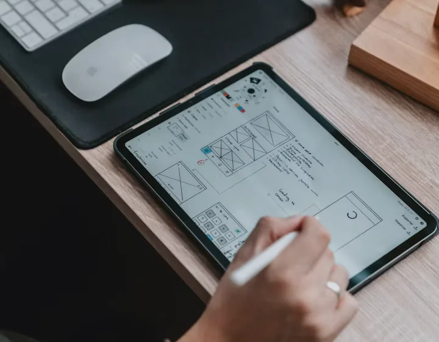
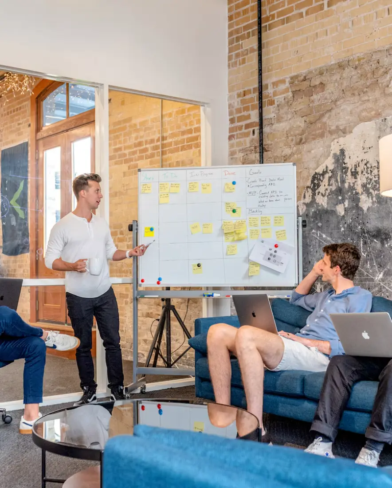

Interface design
Layout, hierarchy, and the small details that decide whether a screen feels calm or exhausting.
Services


The Challenge
We see the same three failure patterns across teams of every size. They're rarely about capability — they're about what wasn't decided, and what quietly got assumed.
Nobody agrees on the constraint, so every conversation moves the target and the work restarts from a slightly different place.
Intent gets lost between the file and the code, and by launch the product has quietly become something nobody chose.
The first version works in a demo. It buckles the moment real people, real data, or a second team arrives.

What We Offer
Every engagement is different, but most of our work falls into one of these four shapes. You can start with one, or move through them in sequence.

Strategy & Discovery
We spend time naming the constraint, the user, and what success looks like in writing — so the rest of the work has something to argue with.

Design & Prototyping
Interface, flow, and the smallest clickable version people can genuinely react to.

Build & Delivery
Production-minded engineering with a bias toward small, reversible releases.

Systems & Integration
The plumbing, structure, and connections that keep a product dependable once real teams and real volume arrive.

Strategy & Discovery
Discovery is often treated as a research phase. We treat it as a decision phase. The goal isn't a bigger document — it's a smaller, sharper problem that the rest of the work can actually solve.
What's actually blocking progress? Usually it's one thing, and usually it isn't the first thing mentioned.
Not a persona. A specific kind of person, with a specific problem, in a specific moment.
So there's a shared answer when someone asks whether it's done.
Design & Prototyping
We don't design in the abstract. We design the smallest usable version of the thing, then put it in front of the people it's for and watch what happens.

A prototype is not a smaller version of the product. It's a larger version of the question.
Layout, hierarchy, and the small details that decide whether a screen feels calm or exhausting.
How a person moves through the product, and where the friction actually lives.
Working enough to test with real users, honest enough to show the gaps.
Build & Delivery
We build in short, observable cycles. Every release is something you can look at, use, and disagree with — not a milestone that arrives after three months of silence.
The first usable version exists before the specification is finished, so feedback arrives while it can still change the shape.
Automated checks, readable code, and honest review — because a product is only as trustworthy as its worst release.
Small, contained changes mean a bad decision costs a day, not a quarter.

Systems & Integration
The part people don't see is often the part that decides whether the product survives its own success. We build the layers deliberately, so the next version builds on this one instead of replacing it.
A shared language for the work, so every feature speaks the same vocabulary.
Other tools join in without taking over the core experience.
Each part does one job well and can change without a rewrite.
Collaboration Model
The best work happens when we're close enough to the problem to be wrong out loud. We keep the loop short, the writing honest, and the decisions visible to everyone who needs them.

We don't hide work behind a status page. You see the same board we do.
A short call, a written update, and something working to look at.
You talk to the people doing the work, not to an account layer.
Engagement Path
Not a fixed process — a rhythm. Every engagement bends to fit the team, but the shape usually looks something like this.
A short call to understand the problem and check whether we're the right people to help.
A written shape for the engagement — what we'd do, what we wouldn't, and how we'd know it's working.
We narrow the problem together and agree on what the first version should prove.
The smallest usable version, in front of the right people, early enough to change.
Short cycles of shipping and learning, with everything visible along the way.
Either we help the team run it themselves, or we stay on for the next loop.
Practical Outcomes
We won't invent numbers we can't show. These are the qualitative shifts teams have described — the kind of change that shows up in how work feels, not just in a dashboard.

Once the reasoning lives next to the work, conversations move forward instead of looping back to the same unresolved question.
Because something working exists early, the people using it get a say before the shape is fixed.
Context is where the work is, so the first week is spent contributing rather than reconstructing history.

Because the foundations were chosen deliberately, the second iteration builds on the first instead of replacing it.
Questions Before We Begin
These are the questions that come up most often in a first conversation. If yours isn't here, ask it — we'd rather answer it directly than leave it hanging.
With a short conversation, not a proposal. We want to understand the problem first. If it looks like a fit, we'll send a short written scope that describes what we'd do, what we wouldn't, and roughly how long it would take.
Sometimes. For a well-understood problem, a fixed scope can make sense. For anything with real unknowns, we'd rather scope the first phase and re-plan once we've learned something real.
Yes — and often that's the best arrangement. We're comfortable embedding with an internal team, sharing a backlog, and handing work back as the product matures.
Good. We'll start by using it, not by rewriting it. A working prototype is often the fastest path to a shared understanding of what still needs to change.
Let's Talk
We'll tell you honestly whether we're the right people to help — and if we're not, we'll usually point you toward someone who is.